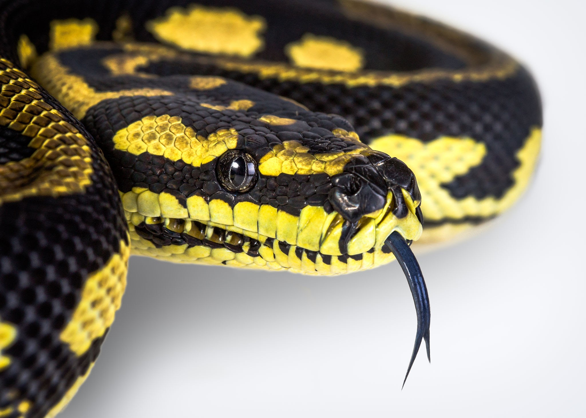
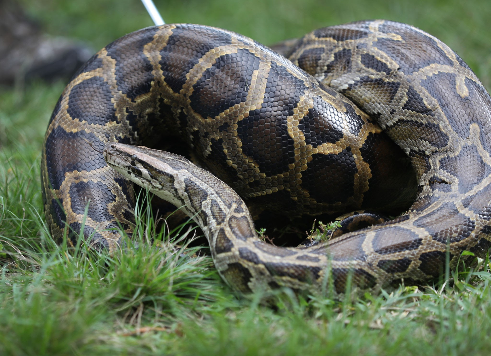
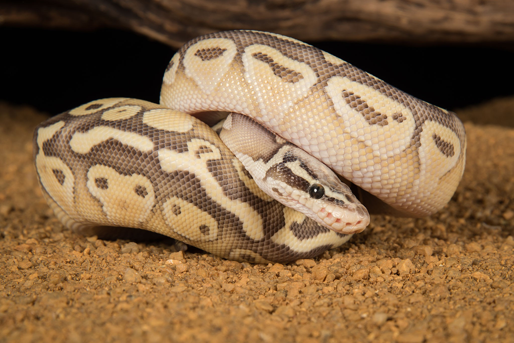

Las serpientes son un grupo de reptiles que se caracterizan por su cuerpo largo y sin extremidades, piel escamosa y habilidad para deslizarse suavemente por el suelo. A continuación se presenta información detallada sobre las serpientes:
1. Anatomía: Las serpientes tienen un cuerpo alargado y flexible, cubierto de escamas. No tienen patas, pero tienen una gran cantidad de músculos que les permiten moverse de manera muy ágil y rápida. La mayoría de las serpientes tienen una cabeza claramente diferenciada del resto del cuerpo, con un cráneo muy móvil que les permite tragar presas grandes.
2. Alimentación: Las serpientes son carnívoras y se alimentan principalmente de animales pequeños, como roedores, aves, peces e insectos. Las serpientes son conocidas por su capacidad para tragar presas enteras, gracias a su habilidad para desencajar sus mandíbulas y abrir su boca hasta un ángulo de 150 grados o más.
3. Reproducción: Las serpientes son ovíparas, lo que significa que ponen huevos. Algunas especies ponen los huevos en nidos, mientras que otras los depositan en lugares ocultos. Las serpientes pueden poner una gran cantidad de huevos, desde unos pocos hasta más de 100 en una sola temporada de reproducción.
4. Veneno: Algunas serpientes tienen veneno, que utilizan para capturar y matar a sus presas. Las serpientes venenosas tienen glándulas venenosas en su cabeza que producen una sustancia tóxica que inyectan en sus víctimas a través de sus colmillos. Aunque el veneno de las serpientes puede ser mortal, muchas especies de serpientes venenosas son tímidas y evitarán el contacto con los humanos siempre que sea posible.
5. Hábitat: Las serpientes se encuentran en una gran variedad de hábitats, desde bosques tropicales hasta desiertos áridos. Algunas especies de serpientes prefieren vivir en árboles, mientras que otras son acuáticas y pasan la mayor parte de su tiempo en el agua.
6. Importancia ecológica: Las serpientes son importantes en los ecosistemas en los que habitan. Ayudan a controlar las poblaciones de animales pequeños, como roedores e insectos, que pueden ser una plaga. También son presas de otros animales, como aves de presa y mamíferos depredadores.
7. Mitología y cultura: Las serpientes han desempeñado un papel importante en muchas culturas a lo largo de la historia. En algunas culturas, las serpientes son consideradas sagradas y se les atribuyen poderes mágicos. En otras culturas, las serpientes son consideradas peligrosas y malvadas.
En resumen, las serpientes son animales fascinantes con una gran variedad de características y comportamientos únicos. Son importantes para la salud de los ecosistemas en los que viven y han desempeñado un papel importante en la mitología y la cultura de muchas sociedades.


